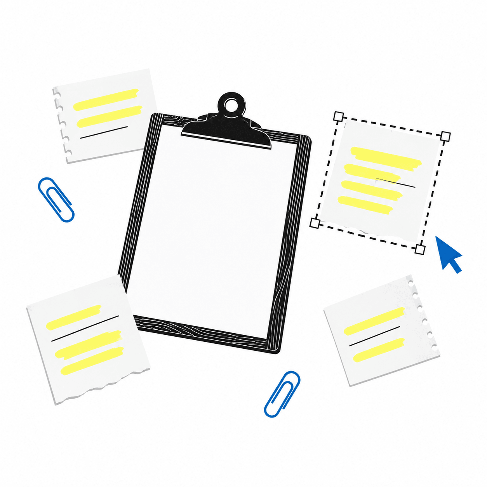
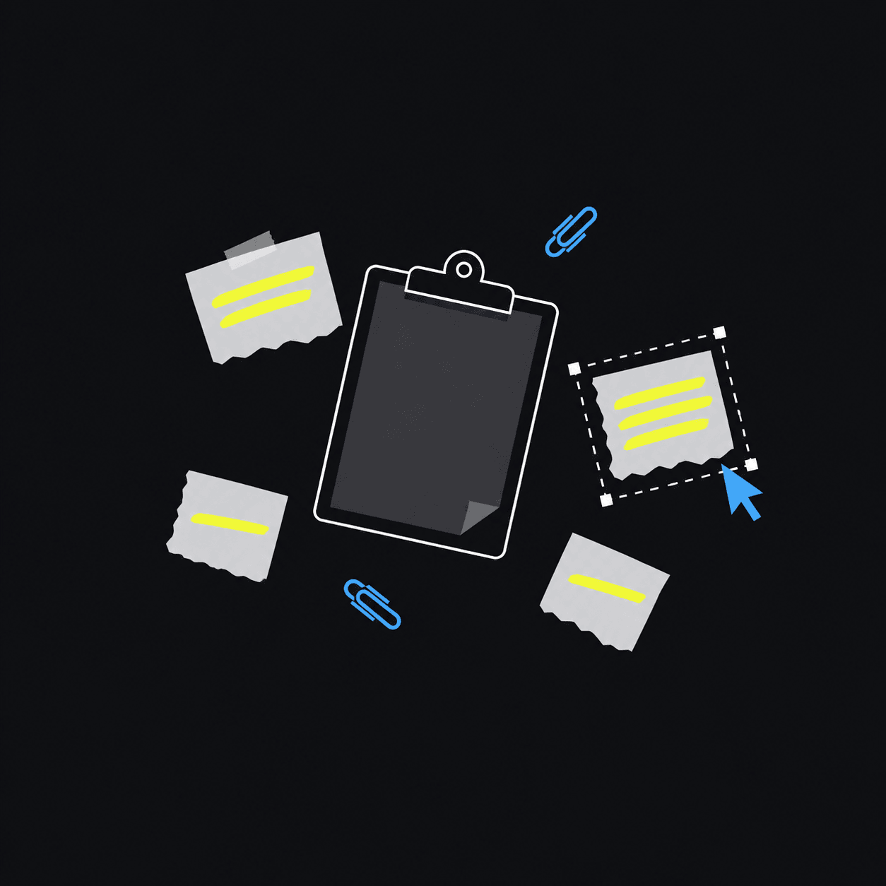

复制十次，只留一条
同样的内容不重复占地方，只把时间挪到最近一次。
Windows 剪贴板历史管理器。装完 2.2MB，数据只存你电脑，没有账号，也不联网。


搜索按内容匹配，不用记得是从哪个网页、哪个文档复制的。
同样的内容不重复占地方，只把时间挪到最近一次。
图片有缩略图，多选文件整组记，超长内容转存成文件，一个字都不会丢。
图片贴进浏览器、Office 都是好的；富文本、链接、文件路径各走各的，不会串。
设置里一键暂停采集、一键清空全部历史（含图片文件）——主动权在你手里。
这就是真实的 ClipVault 面板，跑在你的浏览器里。可以搜索、切换分类、置顶、删除、看统计——数据保存在浏览器的 localStorage，清除站点数据时才会重置。
实际使用中，这一步由 Ctrl+C 完成，不用点任何按钮。
| 按键 | 作用 |
|---|---|
| Alt + V | 呼出 / 隐藏面板（贴着鼠标弹出） |
| 打字 | 搜索（搜的是内容，不只是标题） |
| ↑ / ↓ | 在条目间移动 |
| Enter | 粘贴选中项到之前的窗口 |
| Del | 删除选中项 |
| Esc | 清空搜索 → 关闭面板 |
| 鼠标悬停 | 长文本看全文，图片看大图（可划选复制） |
所有数据都在下面这个目录里。备份 = 复制整个文件夹；彻底清除 = 删掉它。
%APPDATA%\com.clipvault.app\clips.db — 历史记录（SQLite，明文）images\ — 图片条目的 PNG 文件settings.json — 历史上限 / 热键 / 过滤词 / 开机自启js-errors.log — 界面报错记录（排查问题时发这个）